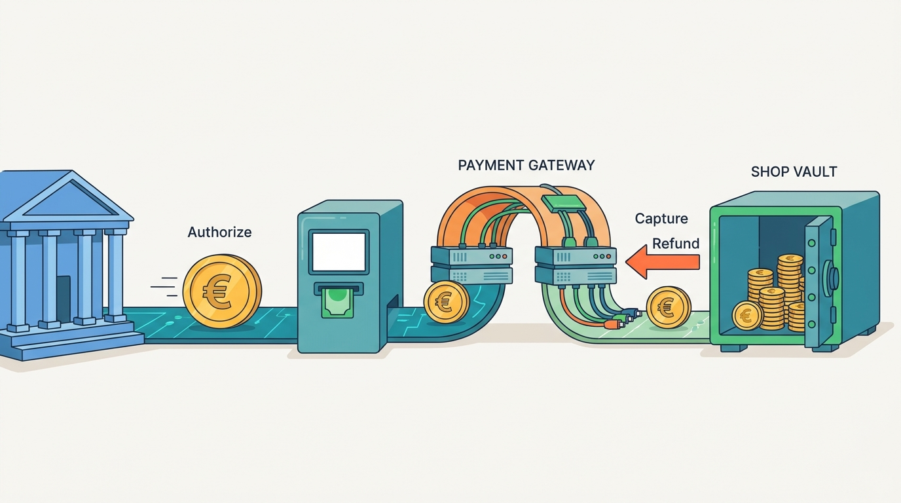

Part III — ORDER: Cart, Checkout, Payment and the Order Record
Taking the Money: Payment Providers, Authorization, Capture and Refunds
AI-assisted: researched and written with Claude Code and Codex; illustrations generated with Gemini and OpenAI image tools. How this works
